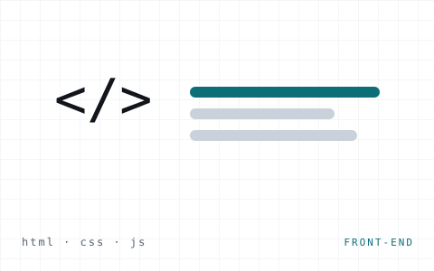

Web · Front-end
Portfólio pessoal responsivo
Este site. Multipágina e responsivo, com tema claro/escuro persistente (localStorage), menu adaptável e validação de formulário em JavaScript.
html5css3javascriptjquery